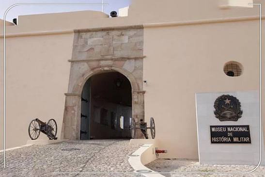
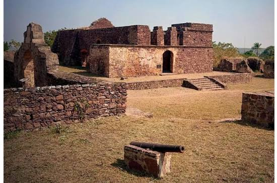

4h
4h
Cultural
Tour Cultural em Luanda
Descubra a história e a cultura de Luanda com um guia local especializado.
 6h
6h
Natureza
Visita às Quedas do Kalandula
Explore uma das maiores quedas de água de África com um guia especializado.
 5h
5h
Histórico
Visita a Mbanza Kongo
Conheça a antiga capital do Reino do Kongo, Património Mundial da UNESCO.
 3h
3h
Aventura
Trilha na Serra da Leba
Explore as montanhas da Serra da Leba com um guia especializado em aventura.

3h
Cultural
Museu das Forças Armadas
Visita guiada ao Museu das Forças Armadas com um historiador especialista.
 8h
8h
Natureza
Deserto do Namibe 4x4
Aventura no deserto mais antigo do mundo com veículos 4x4.

4h
Histórico
Ruínas do Forte de Cuamato
Explore as ruínas históricas do Forte de Cuamato no coração do Cunene.
 6h
6h
Aventura
Ilha do Mussulo - Atividades Aquáticas
Desfrute de um dia de sol e atividades aquáticas na Ilha do Mussulo.
 Flexível
Flexível
Personalizado
Roteiro Personalizado
Crie o seu próprio roteiro com a ajuda dos nossos especialistas em turismo.